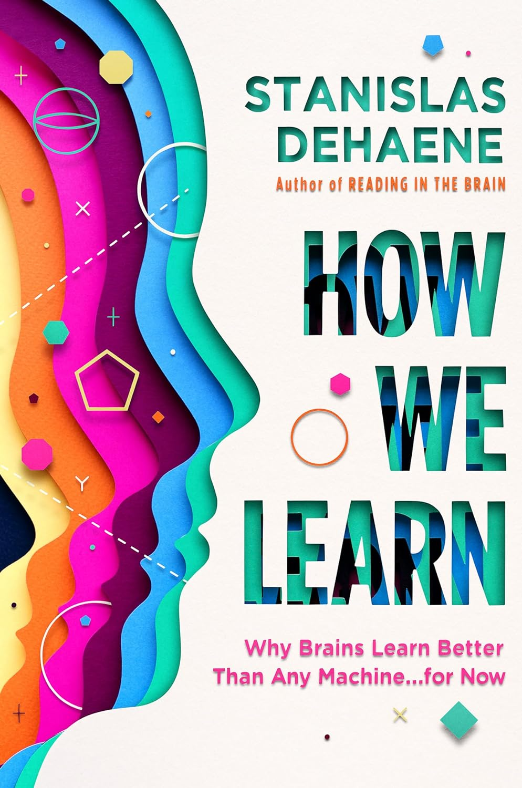

Week 6: Code Examples and Midterm Prep
DSAN 5500: Data Structures, Objects, and Algorithms in Python
Jeff Jacobs
Tuesday, February 20, 2024
Jeff Will Now Provide More Code Examples!
- As long as you keep in mind the caveat from the next slide üòú
Hammers vs. Structures Built w/Hammers
- How I see the course title:
- Data Structures!
- Objects!, and
- Algorithms! (in Python)
- How people I’m trying to meet halfway see the title(?): (Data Structures, Objects, and Algorithms) in Python!
Many, Many Education Systems (including DCPS)
- “This is the correct way to do _________”
- Regurgitate it: ‚úÖüíØ‚úÖ (Didn‚Äôt get hit with stick üòé)
- Fail to regurgitate it: ‚ùåüëé‚ùå (Got hit with stick üòî)
Studies of Learning + Motivation

- Focus attention on (sufficiently interesting) structure
- \(\implies\) students’ comfort with tools “arises out of” wanting to build it
- \(\implies\) students discover ways to use tools that “click” w/them specifically (serotonin spike: tool \(\leftrightarrow\) thing they built)
- Tell students correct and incorrect ways to use tools
- \(\implies\) students learn “correct” and “incorrect” as rules
- \(\implies\) (a) lower retention, (b) less adaptability to new tools
Applies Equally Well Whether…
You’re a sappy socialist like me…

‚ĶOR u just want that data sci BAG bruh! üí∞

Midterm Prep
Midterm Structure
- Coding Portion: Modifications of
LinkedList(Circular / jump-to-end / doubly-linked); non-scary OOP skeleton üôà - Multiple Choice Portion: Lots more to cover‚Ķ
- Hash Tables: \(O(1 + \epsilon \log_2(n))\), but think about it as:
- \(1 + (\text{Collision rate}) \cdot (\text{Collision handler efficiency})\)
- Linked List \(\rightarrow\) Binary Search Tree
- Depth-First vs. Breadth-First: Picture of a tree \(\rightarrow\) (a) what is BFS result, (b) what is (in/pre/post)-order DFS result?
- Lastly: Cormen, Leiserson, Rivest, Stein (CLRS), pgs. 17-106
The Two Boxes That Most Things In This Course Can Be Sorted Into
- Box 1: Linear Things
- Box 2: Logarithmic Things
- Things that go into the boxes:
- Algorithms
- Data Structures
- Software Development Patterns
The Boxes
| Linear Things: \(O(N)\) | Logarithmic Things: \(O(\lg{N})\) | |
|---|---|---|
| Data Structures |
|
|
| Sorting Algorithms | Insertion-Sort | Merge-Sort |
| Search Algorithms | Linear-Search | Binary-Search |
| General Pattern | One-by-One | Divide-and-Conquer |
| Steps to Look Up a Word | \(N = 102118\) | \(\lceil \log_2(N) \rceil = 17\) |

- Hash Table: A “trick” that gets us close to \(O(1)\), by pre-allocating lots of memory!
\[ O(N) \; \underbrace{\leadsto O(\log_2(N))}_{\mathclap{\substack{\text{More Efficient Algorithm} \\ \text{(Free!)}}}} \; \underbrace{\leadsto O(1 + \epsilon\log_2(N))}_{\substack{\text{More Memory} \\ \text{(\$\$\$)}}} \]
Homework 2
AlphaHasher vs. CustomHasher
# @title define-alpha-hasher
from abc import ABC, abstractmethod
import string
class CustomHasher(ABC):
@abstractmethod
def __init__(self):
pass
@abstractmethod
def get_alphabet_size(self):
pass
@abstractmethod
def hash(self, str_to_hash: str) -> int:
pass
@abstractmethod
def compute_position_in_alphabet(self, uppercase_key: str) -> int:
pass
@abstractmethod
def compute_key_for_index(self, index: int) -> str:
pass
class AlphaHasher(CustomHasher):
def __init__(self):
self.alphabet_size = 26
def get_alphabet_size(self):
return self.alphabet_size
def hash(self, str_to_hash: str) -> int:
if len(str_to_hash) == 0:
first_letter = 'A'
else:
first_letter = str_to_hash.upper()[0]
# And return its index in the alphabet:
# 'A' has index 0, 'B' has index 1, etc.
return self.compute_position_in_alphabet(first_letter)
def compute_position_in_alphabet(self, uppercase_key: str) -> int:
return string.ascii_uppercase.index(uppercase_key)
def compute_key_for_index(self, index: int) -> str:
return string.ascii_uppercase[index]LinkedList via PolymorphicNode
EmptyNode\(\rightarrow\)ContentNode
# @title define-linked-list
from abc import ABC, abstractmethod
class LinkedList:
def __init__(self):
self.root = EmptyNode()
def append(self, item):
self.root = self.root.append(item)
def find_item_steps(self, item):
return self.root.find_item_steps(item)
def to_string(self, recurse: bool):
return f'LinkedList[{self.root.to_string(recurse)}]'
def __repr__(self):
return self.to_string(recurse=True)
def __str__(self):
return self.to_string(recurse=False)
class PolymorphicNode(ABC):
@abstractmethod
def __init__(self):
pass
@abstractmethod
def append(self, item):
pass
@abstractmethod
def find_item_steps(self, item):
pass
@abstractmethod
def to_string(self, recurse: bool):
pass
def __repr__(self):
return self.to_string(recurse=True)
def __str__(self):
return self.to_string(recurse=False)
class EmptyNode(PolymorphicNode):
def __init__(self):
super().__init__()
def append(self, item):
"""
This is the only weird part of EmptyNode: because we want to utilize
*polymorphism*, when append() is called on an EmptyNode it
is "transformed into" a FilledNode! That is why, in the
LinkedList's append() function, we have self.root = self.root.append(),
and why the FilledNode's append() function works the same way
"""
#print("EmptyLinkedListNode.append()")
new_form = ContentNode(item)
return new_form
def find_item_steps(self, item):
return np.inf
def __len__(self):
return 0
def to_string(self, recurse: bool):
return ''
class ContentNode(PolymorphicNode):
def __init__(self, content_arg):
super().__init__()
self.content = content_arg
self.next = EmptyNode()
def append(self, item):
self.next = self.next.append(item)
# Return just *self*, since we *haven't* transformed the type of
# FilledLinkedListNode by appending another element to it
return self
def find_item_steps(self, item):
if self.content == item or self.content[0] == item:
return 1
return 1 + self.next.find_item_steps(item)
def get_content(self):
return self.content
def __len__(self):
return 1 + len(self.next)
def to_string(self, recurse: bool):
content_str = f'ContentNode[{str(self.get_content())}] '
if not recurse:
return content_str
next_str = str(self.next)
return f'{content_str}{self.next.to_string(recurse)}'Tuple vs. InventoryItem (Part 3.1)
# @title define-inventory-item
class InventoryItem:
def __init__(self, item_name_arg, price_arg):
self.item_name = item_name_arg
self.price = price_arg
def __lt__(self, other): # -> [NotImplemented | bool]:
if isinstance(other, InventoryItem):
return self.item_name < other.item_name
if isinstance(other, str):
return self.item_name < other
return NotImplemented
def __le__(self, other): # -> [NotImplemented | bool]
if isinstance(other, InventoryItem):
return self.item_name <= other.item_name
if isinstance(other, str):
return self.item_name <= other
return NotImplemented
def __gt__(self, other): # -> [NotImplemented | bool]
if isinstance(other, InventoryItem):
return self.item_name > other.item_name
if isinstance(other, str):
return self.item_name > other
return NotImplemented
def __ge__(self, other): # -> [NotImplemented | bool]
if isinstance(other, InventoryItem):
return self.item_name >= other.item_name
if isinstance(other, str):
return self.item_name >= other
return NotImplemented
def __eq__(self, other): # -> [NotImplemented | bool]
if isinstance(other, InventoryItem):
return self.item_name == other.item_name
if isinstance(other, str):
return self.item_name == other
return NotImplemented
def __ne__(self, other): # -> [NotImplemented | bool]
if isinstance(other, InventoryItem):
return self.item_name != other.item_name
if isinstance(other, str):
return self.item_name != other
return NotImplemented
def __repr__(self) -> str:
return self.__str__()
def __str__(self) -> str:
return f'InventoryItem[item_name={self.item_name},price={self.price}]'ThingContainer (Part 3.2)
# @title define-thing-container
class ThingContainer:
def __init__(self):
self.internal_list = []
@abstractmethod
def put_new_thing_in(self, item):
pass
def is_empty(self) -> bool:
return self.__len__() == 0
def __len__(self):
return len(self.internal_list)
@abstractmethod
def take_existing_thing_out(self):
pass
class Stack(ThingContainer):
def __init__(self):
super().__init__()
def __push(self, item):
self.internal_list.append(item)
def __pop(self):
return self.internal_list.pop()
def put_new_thing_in(self, item):
return self.__push(item)
def take_existing_thing_out(self):
return self.__pop()
class Queue(ThingContainer):
def __init__(self):
super().__init__()
def put_new_thing_in(self, item):
return self.__enqueue(item)
def __enqueue(self, item):
self.internal_list.insert(0, item)
def __dequeue(self):
return self.internal_list.pop()
def take_existing_thing_out(self):
return self.__dequeue()AlphaHasher2 (Part 5)
# @title define-alpha-hasher-2
class AlphaHasher2(CustomHasher):
def __init__(self):
self.alphabet_size = 26 * 26
def get_alphabet_size(self):
return self.alphabet_size
def hash(self, str_to_hash: str) -> int:
if len(str_to_hash) == 0:
first_two_letters = 'AA'
elif len(str_to_hash) == 1:
first_letter = str_to_hash.upper()[0]
second_letter = 'A'
else:
first_letter = str_to_hash.upper()[0]
second_letter = str_to_hash.upper()[1]
#print(f'First two letters for {str_to_hash}: {first_letter}{second_letter}')
# And return its index:
# 'AA' has index 0, 'AB' has index 1, etc.
first_letter_pos = AlphaHasher2.compute_position_in_alphabet(first_letter)
second_letter_pos = AlphaHasher2.compute_position_in_alphabet(second_letter)
# The position in the two-letter alphabet is just 26*first + second
final_pos = 26 * first_letter_pos + second_letter_pos
return final_pos
def compute_position_in_alphabet(self, uppercase_key: str) -> int:
if uppercase_key in string.ascii_uppercase:
return string.ascii_uppercase.index(uppercase_key)
return 0
def compute_key_for_index(self, index: int) -> str:
first_letter_part = int(index / 26)
second_letter_part = index % 26
# In case you need to debug!
#print(f'alpha2_index: {index}, first_letter_part: {first_letter_part}, second_letter_part: {second_letter_part}')
return string.ascii_uppercase[first_letter_part] + string.ascii_uppercase[second_letter_part]DSAN 5500 Week 6: Code Examples and Midterm Prep